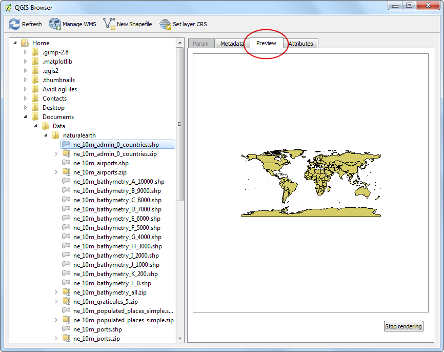
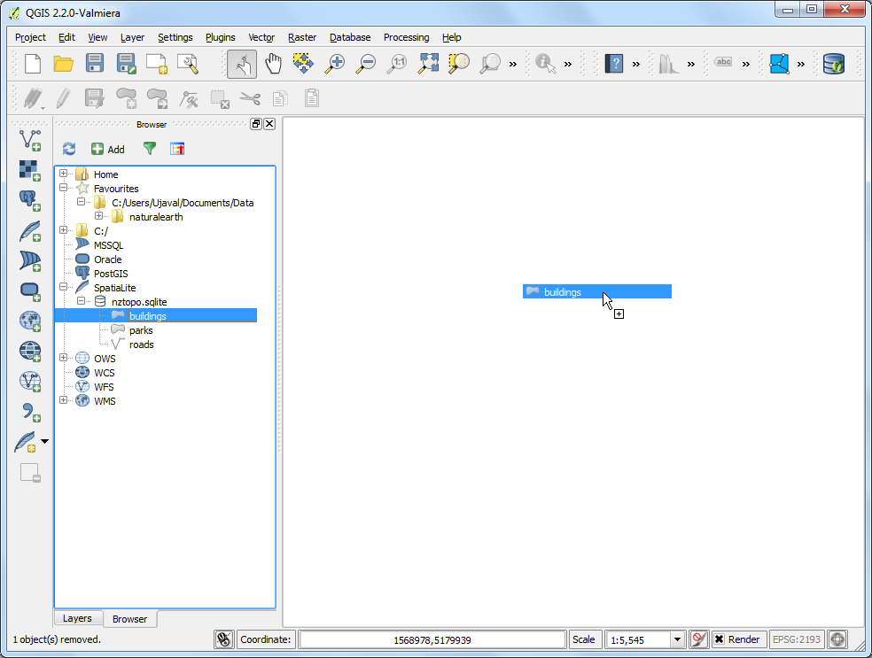

Menggunakan QGIS Browser
[ Download PDF A4 Letter ]
QGIS tersedia dengan sebuah aplikasi terpisah bernama QGIS Browser. Ini adalah tool paketan yang berguna di QGIS dan membantu dalam mengatur dataset GIS. User ArcGIS mungkin menyamakannya denga ArcCatalog.
Menemukan lokasi QGIS Browser
QGIS Browser sebagai aplikasi terspisah
QGIS Browser adalah bagian dari penginstallan standard dari QGIS
Untuk WIndows: Ketika anda menginstall QGIS lewat OSGEO4W installer, anda dapat melihat QGIS Browser pada start menu anda
Untuk Mac: Aplikasi ini terletak di QGIS.app/Contents/MacOS/bin/QGIS Browser.app. Anda dapat membuat sebuah symlink untuk aplikasi ini. Navigasi ke folder aplikasi, klik kanan pada ikon QGIS dan pilih Show Package Contents. Jelajahi . Klik kanan pada ikon QGIS Browser dan pilih Make Alias. Bawa QGIS Browser alias` ke folder Applications. Sekarang anda sudah bisa mengakses QGIS Browser seperti aplikasi lain
Untuk Linux : Anda dapat meluncurkan QGIS browser dengan command qbrowser. App terletak pada direktori yang sama dengan aplikasi QGIS

Panel Brwoser di QGIS
Cara yang nyaman untuk mengakses QGIS Browser adalah dari aplikasi desktop utama QGIS itu sendiri. Panel browser terletak pada bagian bawah panel kiri di QGIS. Klik tab Browser untuk membuka QGIS Browser. Jika anda tidak melihat tab Browser, aktifkan tab dengan melakukan (Windows dan Mac) atau (Linux).

Prosedur
Sekarang mari kita mengeksplor fitur-fitur pada QGIS Browser. Pindah ke Aplikasi terpisah QGIS. Jelajahi direktori pada sistem anda di mana anda mempunya beberapa data GIS. Anda akan dengan segara menyadari manfaat QGIS Browser ini. Dengan ini anda tidak melihat semua file support dan data non-spasial, melainkan anda hanya akan melihat layer spasial yang didukung oleh QGIS. Klik pada layer untuk memilih.

Ketika anda pilih sebuah layer, anda akan melihat metadat pada tab pertama pada panel kanan. Anda dapat dengan cepat memperoleh informasi basis mengenai dataset dari panel ini, seperti jumlah fitur, proyeksi dan lain-lain.

Jika anda pindah ke tab Preview, anda akan melihat tampilan garis besar dataset. Ini adalah cara yang cepat untuk mengetahui bagaimana dataset ini terlihat sebelum membukanya di QGIS

Tab yang terakhir adalah tab Attribit. Di sini anda dapat melihat tabel Attribut dari dataset untuk mengetahui kolom atau field yang tersedia dan nilainya

QGIS Browser tidak hanya memberikan anda akses pada layer vector dan raster pada sistem anda, tapi juga sumber database dan jaringan. Jika anda menggunakan data secara online lewat WMS, anda dapat dengan cepat melihat preview melalui browser. Hanya dengan menelusuri lokasi WMS and anda anda dapat melihat sumber yang sudah diatur. Hal yang sama, jika anda mempunyai database PostGIS, SpatialLite atau MSSQL, anda dapat juga mengakses database ini.

QGIS Browser mampu untuk menjelajahi dan membuka file zip secara langsung. Navigasi ke folder manapun yang mengandung file zip. Anda akan melihat bahwa file zip juga muncul sebagi dataset terdukung dan anda dapat melihat previewnya seperti dataset yang lain

Fitur lain yang berguna adalah menambahkan beberapa folder pada sistem anda sebagai Favorites . Klik kanan folder apa saja dan pilih Add as a favorite.
Catatan
Untuk sekarang, penambahan sebuah folder pada daftar favorit hanya bisa dilakukan dari ponel Browser di QGIS. Fitur ini tidak tersedia pada aplikasi terpisah

Setelah menambah lokasi sebagai favorit, ini dapat diakses secara cepat dari folder Favorites di browser

Ketika anda seudah memilih layer, anda dapat mengdobel-klik layer untuk menambahkannya pada kanvas QGIS. Anda juga dapat melkukan klik-tahan-lepas atau drag-and-drop layer pada Kanvas QGIS

Anda dapat kembali ke panel Layers dari sebelah bawah panel kiri di QGIS untuk memperlihatkan layer yang sudah ditambahkan